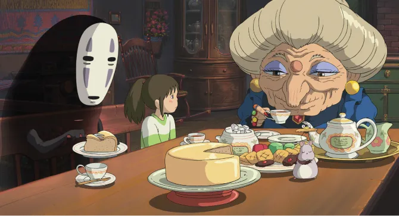

Dans le film d'animation emblématique "Le Voyage de Chihiro" de Studio Ghibli, une citation énigmatique de Zeniba
résonne profondément : "On n’oublie jamais les gens qu’on a rencontrés, on a juste du mal à s’en souvenir."
Cette réplique suscite une réflexion profonde sur la nature des rencontres et de la mémoire. Découvrez comment cette
maxime s'applique à notre propre vie et pourquoi elle résonne avec tant de personnes.
par Viktor Ghirardelli
Publié aujourd’hui à 14h45 | Temps de lecture 1 min
Les rencontres qui marquent
Dans la vie, nous faisons constamment des rencontres, que ce soit avec des amis, des collègues, ou des étrangers de
passage. Certaines de ces rencontres passent presque inaperçues, mais d'autres laissent une empreinte durable dans notre
esprit.
La citation de Zeniba met en lumière le fait que ces rencontres, même si elles semblent parfois s'effacer de notre
mémoire, laissent toujours une trace. Elles contribuent à façonner notre identité et notre parcours.

Image de Zeniba, du sans visage et de Chihiro
La fragilité de la mémoire
La seconde partie de la citation, "on a juste du mal à s’en souvenir", soulève une question essentielle sur la mémoire.
Pourquoi est-il si difficile de se souvenir de certaines personnes, même si elles ont eu un impact significatif sur nous
?
La mémoire est un phénomène complexe, influencé par de nombreux facteurs, tels que le temps qui passe, le stress, et la
quantité d'informations que nous absorbons au quotidien. Cette partie de la citation nous invite à réfléchir sur notre
propre mémoire et sur la manière dont nous préservons les souvenirs des personnes que nous avons rencontrées.
Image de Haku et de Chihiro
L'importance des souvenirs
Enfin, la citation de Zeniba met en évidence l'importance des souvenirs et des rencontres dans notre vie. Même si nous
oublions parfois les visages et les noms, l'impact émotionnel et les leçons tirées de ces rencontres demeurent. Les
rencontres enrichissent notre expérience et nous aident à grandir en tant qu'individus.
Il est essentiel de cultiver la gratitude pour les personnes que nous avons rencontrées, qu'elles soient encore
présentes dans notre mémoire ou qu'elles aient disparu dans l'oubli.
Image de Haku et de Chihiro
En conclusion, la citation de Zeniba dans "Le Voyage de Chihiro" nous rappelle que les rencontres sont un élément
fondamental de notre voyage dans la vie. Elles façonnent notre histoire et notre identité, même si nous avons
parfois du
mal à nous en souvenir. Elle nous invite à réfléchir sur la manière dont nous préservons nos souvenirs et à
reconnaître
l'importance des personnes que nous avons croisées en chemin.
Alors, prenons un moment pour nous souvenir de ces rencontres qui ont marqué notre vie, même si elles semblent
parfois
s'estomper, car, comme le dit Zeniba, on n’oublie jamais vraiment les gens que l'on a rencontrés.
Envie d'en découvrir davantage ?
Grâce à l'article suivant, vous pourrez apprécier une analyse détaillée du film.
Donc préparez-vous à plonger plus profondément dans cet univers magique et à redécouvrir les merveilles de cette
histoire emblématique.
Le voyage de chihiro
Le cinéma d'animation japonais a le don de nous plonger dans des univers extraordinaires, mais aucun film n'a captivé le
public autant que "Le Voyage de Chihiro".
Réalisé par Hayao Miyazaki, ce chef-d'œuvre nous emmène dans un monde fantastique empreint de mystère. Découvrons
l'univers de ce film culte en trois actes : l'histoire, l'analyse, et l'impact sur les spectateurs.